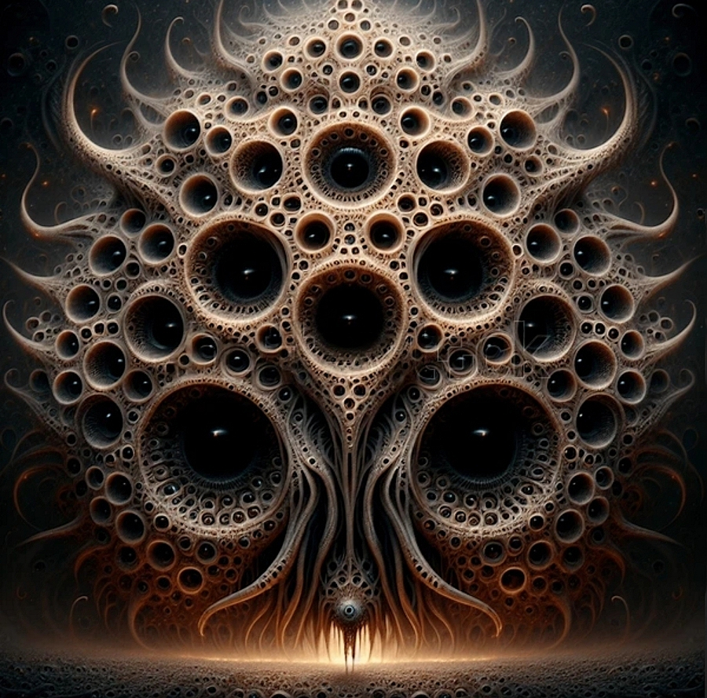

Именно Картина и есть Йог-Сотот!

Иное, Настоящее, Север невозможно ни описать, ни представить.
Оно не может вызывать ни страха, ни интереса, потому что его НЕТ.
...Хармс не символист. Как и все обэриуты, он скорее пародирует, выворачивает наизнанку, доводит до абсурда символистскую многозначность. Каждая деталь убедительна в своей конкретности, и она может значить все, что угодно.
Из Лавкрафта:Клоун АртЭто было Всё-в-Одном и Одно-во-Всём безграничном Бытие, — не просто суть единого пространственно-временного континуума, но и вкупе с абсолютной животворящей сущностью всего безграничного бытия — последний, всеобъемлющий, не имеющий границ, превосходящий любые фантазии и расчёты математики. Возможно, он был тем, кого древние тайные культы Земли шёпотом назвали ЙОГ-СОТОТ, и был известен под именами других божеств; которому поклонялись ракообразные инопланетяне с Юггота как Находящемуся-за-Краем, и кого летучие разумы из спиральных туманностей знают по непереводимому Знаку
огромные шары света, массой двигавшиеся к отверстию; когда лопнул один шар, то из него потекла протоплазма, чёрная плоть, соединявшаяся воедино, формируя то отвратительное ужасное существо из космоса, исчадие тьмы доисторических времён, аморфное чудище со щупальцами, таившееся у порога, чьё обличье состояло из мешанины шаров; несущего погибель Йог-Сотота, пенящегося, как первобытная слизь в молекулярном хаосе, вечно за пределами бездонных глубин времени и пространства
Безграничное Бытие воплощало Всё-в-Одном и Одно-во-Всём, о котором ему поведали волны. Оно заключало в себе не только время и пространство, но и весь универсум с его безмерным размахом, не знающим пределов, и превосходящим любые фантазии и расчёты математиков и астрономов. Возможно, в древности жрецы тайных культов называли его Йог-Сототом и шёпотом передавали из уст в уста это имя, а похожим на раков инопланетянам с Юггота он был известен как На-ходящийся-за-Краем. Его летучих вестников со спиралевидными мозгами узнавали по непереводимому знаку, но Картер понимал, сколь относительны и неточны все эти определения.
Правдива история Ибн Шахаба о том, что лицо Йогг-Сотота — это лицо самих небес. Он и его огромное пространство — одно и то же, и вращающиеся пересекающиеся круги сфер — это упорядоченное движение его мыслей, некоторые из которых движутся быстро, а другие — медленно, как раз поворот полос астролябии, чтобы отмечать движения блуждающих звезд. Его видят только в лицо, у него нет тела, поскольку его тело — это сама вселенная, однако не само вещество творения, но размеры углов и расстояний между ним, поскольку он создан из неосязаемой сущности и его можно воспринимать только как мерцающий диапазон постоянно меняющихся цветов, таких, какие можно увидеть на панцире жука или крыле стрекозы в лучах солнца.

- Сюиты Баха для виолончели; сама музыка Баха как розовый шум
- Клеточные автоматы, в особенности Wolfram Physics Project
- Ветровые машины
- Монстр из консервных банок
- Джибериш, хаотический танец